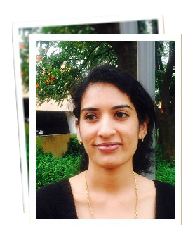
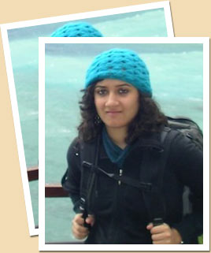

India Untravelled is our quest to help travellers discover a side of India that not many people have experienced before. Our destinations lie in rural parts of India with untouched natural beauty, where hospitality comes innately to the people and a traditional, earthy way of life can still be experienced.
As you set off the beaten path, our rural homestays & farmstays let you discover the vibrant culture of India’s villages, indulge in delectable local cuisines, uncover ancient traditions, rejuvenate your spirit with the region’s folk music & dances, discuss local legends & stories around a bonfire, and explore centuries old indigenous art forms
At many of our destinations, you might be one of the few tourists in the region, and will get a chance to interact closely with the local communities, hosts, cooks and craftspeople. You'll love getting away from the crowds of the cities, and unwinding amid nature, in a safe & comfortable environment. At the same time, the revenue that your visits generate will help support and sustain the local communities, their heritage, culture, traditions and art forms.
India Untravelled is a social enterprise that aims to bridge the digital marketing gap between socially responsible tourism offerings in rural parts of India, and urban travellers looking for authentic travel experiences.
Promoting travel as a lifestyle.
“Instead of wondering when your next vacation is, maybe you ought to set up a life you don’t need to escape from.”
~ Seth Godin
We think of travel, not as a break from life, but as life itself. To be on the road in search of new experiences is one of the best ways to discover who you are & how far you can stretch yourself, to get to know people who's world is much different from yours, to come to respect the natural diversity our planet has to offer, and to find the courage to do the things you love. As fellow travellers, we would hate for travel experiences to be constrained by lack of money, time, accurate information or encouragement, so at India Untravelled, we aspire to carve out travel experiences that are affordable, accessible, experiential and responsible, and we go all out to reach you in the comfort of your social networks (Facebook, Twitter et al) to encourage you to travel.
Sifti Dhillon, Owner (Marketing and PR)
Sifti caught the travel bug early on from her parents. Though born in Delhi, she spent a few years in Chennai as a child, which helped her understand the sheer diversity in culture and the variety of experiences India had to offer. She has travelled across the country over the years, from the barren, mystical mountains of Ladakh to the white sand beaches in Andaman. Though the journey never seems to end, she now calls Chandigarh home. Her love for travel led her to take a break from a career in education, and paved the way to India Untravelled.

Srikala, Marketing Associate - PAST
Srikala has been interested in travel and tourism ever since she has been in school. Brought up in Mumbai, she caught the travel bug from her parents who love to explore places themselves. Geography is her favourite subject and she has done plenty of research in the area for her various projects.
She loves to explore new places, learn about varied cultures and feels that life is one big journey and that there is never a limit to learning. What best way can one learn but through travel!

Shivya Nath,Current Role - Responsible Travel Consultant (Past - Co Founder)
Shivya works as a responsible travel consultant, helping scout sustainable accommodations and community tourism initiatives for India Untravelled. Her journey in the tourism industry began with a stint at the Singapore Tourism Board, where she helped develop the board’s global social media strategy. In 2011, she quit her job in pursuit of a nomadic life, and began traveling the world slowly, responsibly and often solo. She was instrumental in the early days of India Untravelled as its co-founder, and in her new role as a freelance consultant, she has worked on sustainable travel projects in Ecuador and the Indian Himalayas.
Blog: The Shooting Star
Instagram: @shivya
Siddharth Goel, Co-founder (Strategy and Partnerships - PAST)
Siddharth carries a bit of many places in him; a small town in Uttar Pradesh, Bombay, Singapore, the French Riviera, and now Delhi. His tryst with the banking and finance industry ended in the realization of alternative interests, including travelling, Indian politics, and energy security. He saw India with a new lens after spending more than 6 years abroad, and travelling in rural India extensively upon his return. India Untravelled symbolizes his newfound love for his country, one that he hopes everyone who travels in India can experience. His itchy feet have taken him across Europe, the Middle East and Southeast Asia, and he continues his adventures in India, revelling in the unpredictability of the road.
Homestays.
"A man travels the world over in search of what he needs, and returns home to find it."
~ George Moore
We first experienced a homestay in the hinterlands of Vietnam, for lack of an alternative, and were moved by the gracious hospitality of a Vietnamese family we didn’t even have a common language with. Fast-forward a few years; the experience of magnanimous Punjabi hospitality in a small pind of Punjab sparks the birth of India Untravelled. We take it upon us to convince travellers to experiment with accommodation options different from regular hotels or resorts; these are typically home stays or farm stays offered by native families or communities, that offer you the chance to interact closely with your hosts and be part of the local lifestyle of the region, while offering basic (and sometimes luxurious) urban comforts. We personally handpick each of our partners, based on the authenticity & beauty of the experience, their location & accessibility, and their suitability to the needs of any urban traveller (western style loos at the bare minimum). We then go all out to tell travel enthusiasts about our findings.
Responsible Travel.
“When you’re traveling, you are what you are right there and then. People don’t have your past to hold against you. No yesterdays on the road.”
~ William Least Heat Moon
There is a lot of jargon out there about climate change and environmental degradation that we don’t understand, and it’s hard to validate any of it from the comfort of our own homes & offices. Travelling changes that. Take a summer road trip from Delhi to Himachal and the forest fires in our alpine forests will alarm you. Trace the journey of the River Ganga from its glacial source in the Himalayas, down through Rishikesh & Haridwar, and you’ll feel sorry for the dismal brown color it acquires. Hike up into the Shivaliks and their dry barren slopes will tug at your heart. You don’t need to have a masters degree in science to see the impact of our actions on our natural resources. What if small changes in the way we travel could make a big different to the beauty of our world?
It is with this assumption that we choose to work with partners whose efforts make a conscious difference to the ecology and community of a region, and aim to inspire our travellers to make small changes in their travel style, like choosing to take public transport and carrying a good refillable water bottle rather than buying & disposing numerous plastic mineral water bottles.
Solo Travel.
“Twenty years from now you will be more disappointed by the things that you didn't do than by the ones you did do. So throw off the bowlines. Sail away from the safe harbor. Catch the trade winds in your sails. Explore. Dream. Discover.”
~ Mark Twain
Our co-founder Shivya is a strong advocate for travelling solo, and was featured in 2012 by New Woman India magazine as an intrepid female traveller. She’ll tell you that there is nothing quite as liberating and empowering as knowing that you have the confidence to travel all by yourself, make friends with strangers, and experience the world on your own terms. The idea of travelling alone may not appeal to everyone, and to those it does, it is perfectly normal to feel anxious before your first solo trip. At India Untravelled, we actively encourage solo travellers to join group trips organized from time to time, as a first step into the world of single holidays. We also take it upon us to ensure that our partner destinations & itinerary trails are perfectly safe for solo travellers, and filled with interactive experiences.
© Copyright India Untravelled 2015. All Rights Reserved.
Maintained by Axisfusion.in